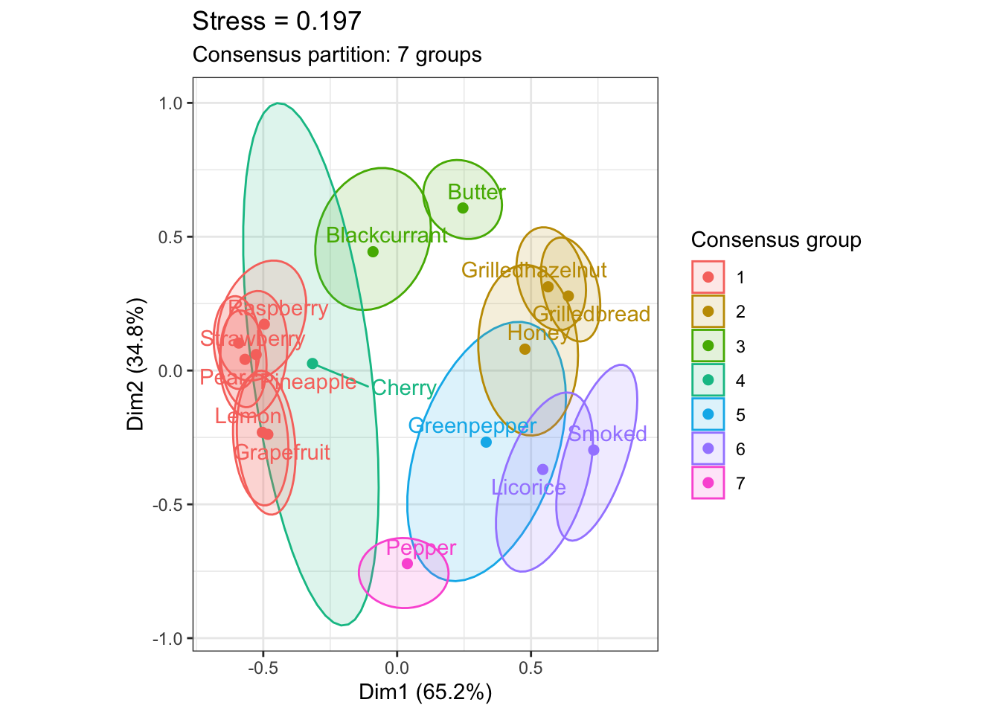
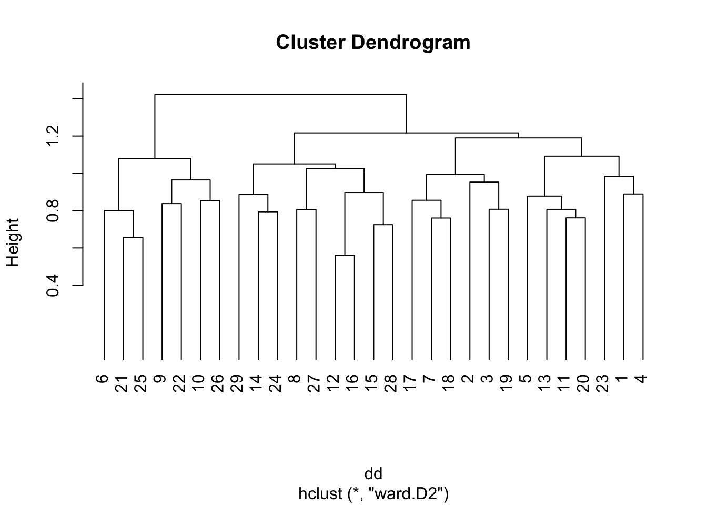
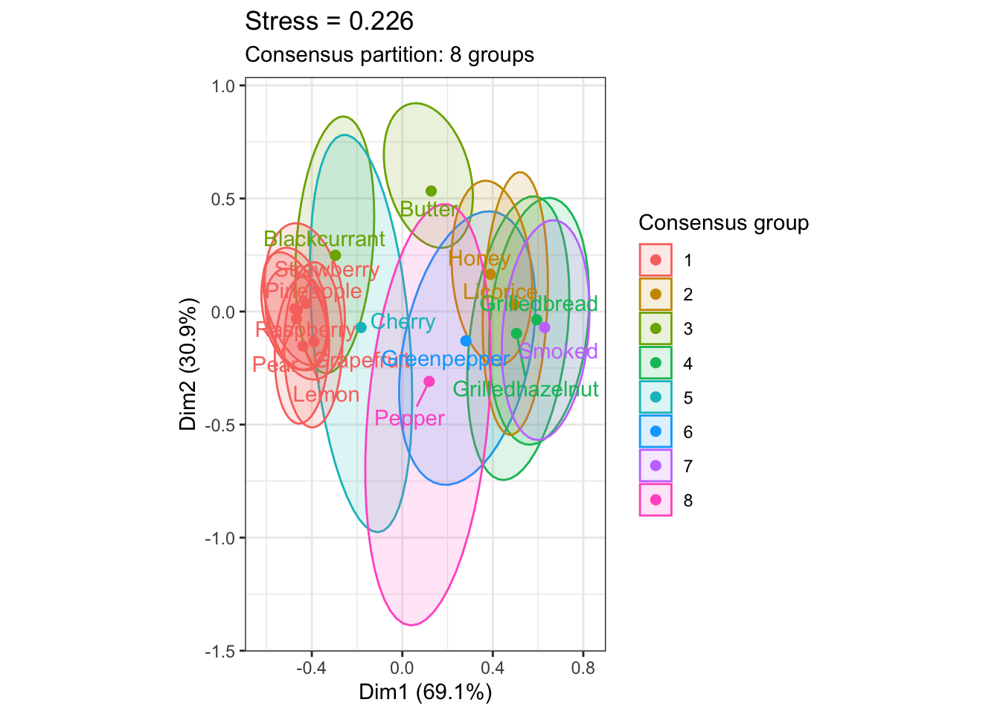

Warning: package 'gridExtra' was built under R version 4.6.13 Partition consensuelle
On cherche une partition qui soit la plus proche possible de l’ensemble des partitions données par les \(N\) individus. On la nommera partition consensuelle.
Cela nécessite de définir une notion de proximité entre partitions.
3.1 Mesure d’accord entre deux individus
On regarde les partitions données par les 2 premiers participants de l’étude précédente. On va mesurer l’accord entre ces deux partitions en regardant le degré d’accord entre les 2 individus pour chaque paire de produits. Les deux individus seront d’accord pour la paire de produit $(P_i,P_j)$ lorsque ils auront mis les deux produits dans le même groupe ou bien qu’ils l’auront mis dans deux groupes différents.
Pour cela on compare les matrices de dissimilarité des deux individus :
Voir le code R
part<-dissim_partition(df)
part$S1[1:4,1:4] Lemon Grapefruit Pineapple Pear
Lemon 0 0 1 0
Grapefruit 0 0 1 0
Pineapple 1 1 0 1
Pear 0 0 1 0Voir le code R
part$S2[1:4,1:4] Lemon Grapefruit Pineapple Pear
Lemon 0 1 0 0
Grapefruit 1 0 1 1
Pineapple 0 1 0 0
Pear 0 1 0 0Courcoux et al. (2014) définissent le Rand Index \(RI(P_1,P_2)=\dfrac{a+d}{P(P-1)/2}\) où \(a+d\) est le nombre d’accord entre les deux individus (ie lorsqu’ils regroupent ou qu’ils séparent les deux produits).
On a \(0\leq RI(P_1,P_2) \leq 1\) (0 désaccord total et 1 accord total).
La fonction RandIndex du package FreeSortR permet d’effectuer ce calcul :
Voir le code R
P1<-part$S1
P2<-part$S5
rand_index(P1,P2)[1] 1Voir le code R
FreeSortR::RandIndex(df$S1,df$S5)$Rand
[1] 0.7416667
$AdjustedRand
[1] 0.051020413.2 Inconvénient
Il augmente en moyenne lorsque le nombre \(N\) de sujets augmente.
La solution est de remplacer \(RI\) par \[ ARI(P_1,P_2)=\dfrac{RI(P_1,P_2)-\overline{RI}}{1-\overline{RI}} \]
où \(\overline{RI}\) est la moyenne du \(RI\) pour 2 partitions dont le consensus n’est dû qu’au hasard.
Conséquences
- \(ARI(P_1,P_2)=0\) lorsque le consensus n’est dû qu’au hasard,
- \(ARI(P_1,P_2)=1\) lorsque le consensus est parfait (ie les partitions sont identiques).
Voir le code R
adjusted_rand_index(P1,P2)[1] 0.17741053.3 Mesure de consensus basé sur \(ARI\)
On cherche une partition \(P\) telle que la moyenne des \(ARI\) de chaque sujet avec cette partition est maximale c’est à dire \(C_M(P)=\frac 1{N}\sum_{n=1}^N ARI(P,P_n)\) maximale.
On procède de façon itérative en fixant le nombre \(K\) de classes dans la partition consensuelle. On choisit la valeur de \(K\) pour laquelle \(C_M(P)\) est maximal.
Cet algorithme est sensible au choix de la première partition. Plusieurs choix sont proposés dans FreeSorteR on choisira :
Voir le code R
C<-consensus_partition(df,type="fusion")Fusion algorithm. May be time consuming.3.4 Résultat pour l’exemple
Partition en 7 classes avec \(C_M(P)=0.308\)
3.5 Représentation de la partition consensuelle sur le plan latent :
Voir le code R
mds_plot_consensus(df,partition_type="fusion")Fusion algorithm. May be time consuming.
3.6 Classification des sujets
L’\(ARI\) permet de définir une distance entre les sujets, \[ d_{ARI}(S_i,S_j)=\sqrt{1-ARI(P_i,P_j)} \] où le sujet \(S_i\) propose la partition \(P_i.\)
3.6.1 CAH avec d_ARI
On peut alors réaliser une classification ascendante hierarchique avec cette distance :
Voir le code R
N<-dim(df)[2]
M<-matrix(NA,nrow=N,ncol=N)
for(i in 1:N){
for(j in 1:N){
M[i,j]<-ari_distance(df,i,j)
}
}
dd <- as.dist(M)
res<-hclust(dd,method="ward.D2")
plot(res,hang=-1,ylim=c(0,1.5))
On choisit de former deux groupes d’individus :
Voir le code R
gr<-cutree(res,2)Ces groupes sont déséquilibrés et constitués de
Voir le code R
gr [1] 1 1 1 1 1 2 1 1 2 2 1 1 1 1 1 1 1 1 1 1 2 2 1 1 2 2 1 1 1On peut ainsi mettre en évidence le consensus pour chacun de ces deux groupes :
Voir le code R
df1<-df[,gr==1]
mds_plot_consensus(df1,partition_type="fusion")Fusion algorithm. May be time consuming.